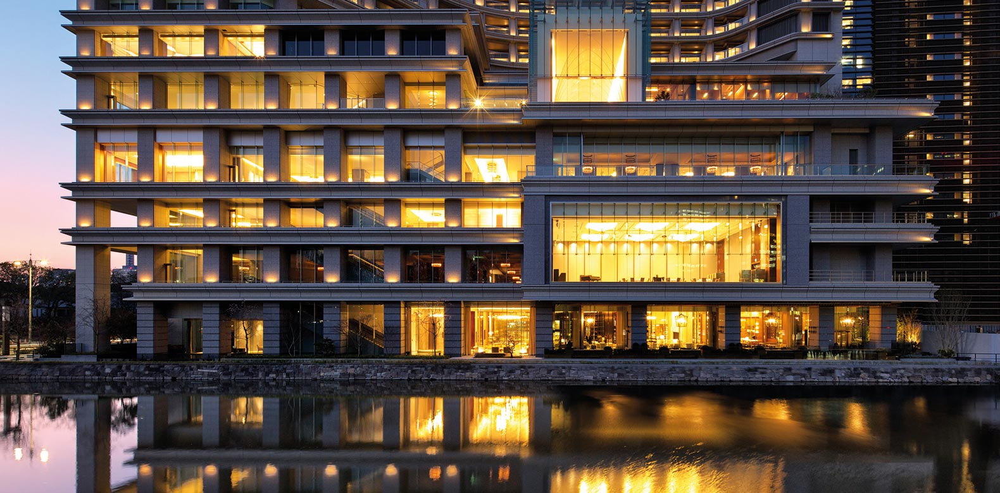
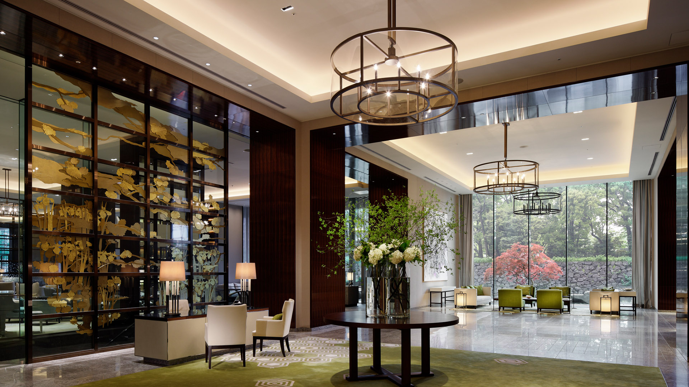
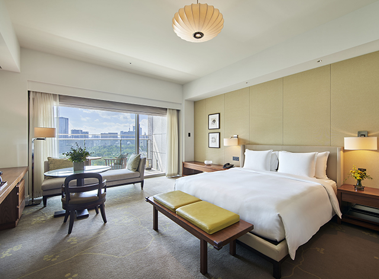

Tokyo Favorite
Palace Hotel Tokyo is the classic, elegant answer for clients who want Japanese hospitality at its most polished.
Palace Hotel Tokyo is the one I would use when the client wants Tokyo to feel classic, graceful, and rooted in place. It sits by the Imperial Palace gardens and moat, which gives the whole stay a calmer rhythm than you expect in the middle of the city.
What makes it unique
It delivers old-school Japanese hospitality without feeling dated.
The hotel has that rare combination of location, balcony views, service culture, and understated elegance. It is not trying to be the flashiest hotel in Tokyo. It is trying to be excellent, and that is exactly why it works.
Best For
Classic Tokyo luxury
Great for families, first-time Tokyo luxury clients, and travelers who value service over scene.
Known For
Palace-side calm
Balconies, moat views, refined dining, and evian SPA TOKYO make the stay feel polished and grounded.
Stay
284 rooms and suites
A larger luxury hotel, but one that still feels incredibly controlled because the service is so precise.
Client Type
Families
Especially good for clients who want comfort, location, calm, and a family-office level of ease.



Rooms and suites
Palace Hotel Tokyo is especially strong when clients want views and a more grounded sense of place. The rooms are refined and comfortable, and the balcony categories are a major plus because outdoor space in Tokyo luxury hotels is not something to take for granted. Suites work well for families, longer stays, and clients who want the hotel to feel like a calm home base.
Dining and wellness
Dining includes Japanese at Wadakura, French dining at Esterre, Lounge Bar Prive, and additional in-house options that make the hotel very self-sufficient. evian SPA TOKYO is another reason this property works well for longer stays. I would build around the hotel with private guides, Imperial Palace walks, Ginza shopping, sushi, kaiseki, cocktail bars, and a slower morning or two so clients actually feel the calm of the location.
My honest take
Palace Hotel Tokyo is not the loud choice. It is the elegant choice. For clients who want Tokyo to feel polished, gracious, and incredibly well handled, it belongs in the top tier.